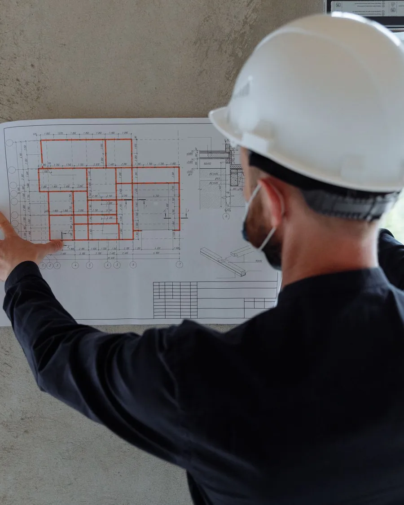
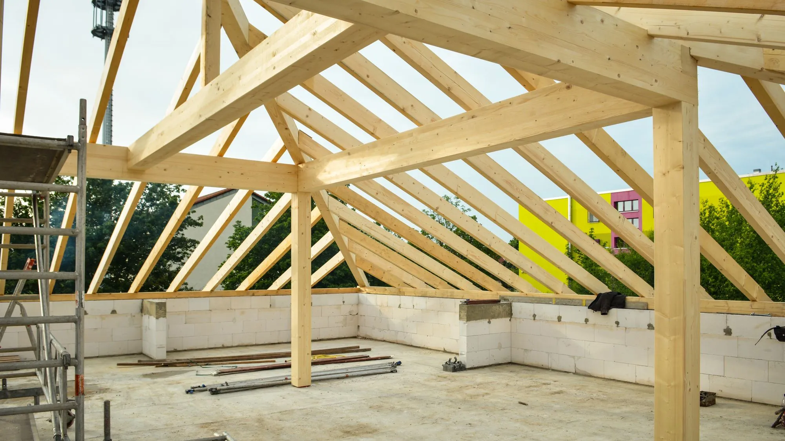
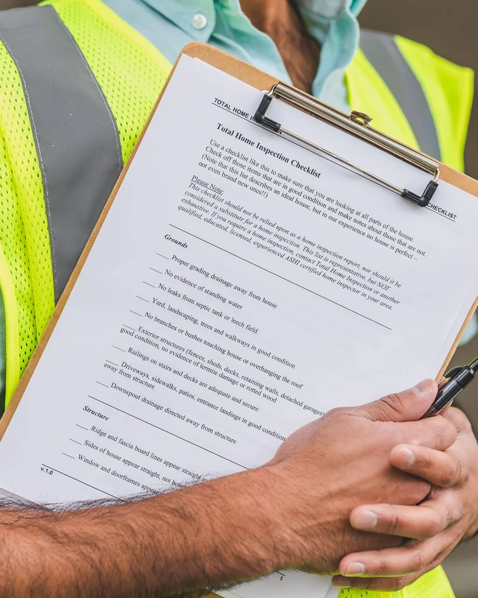
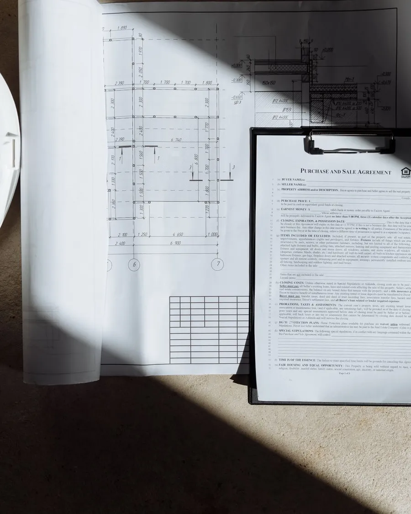
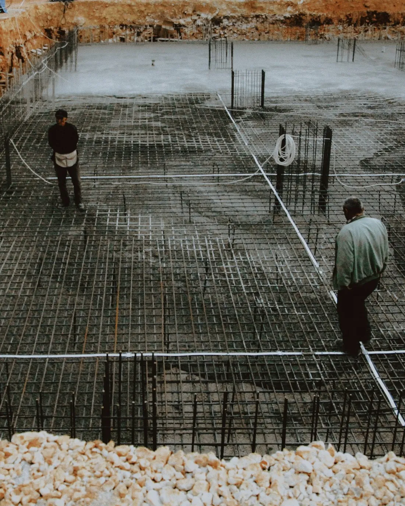
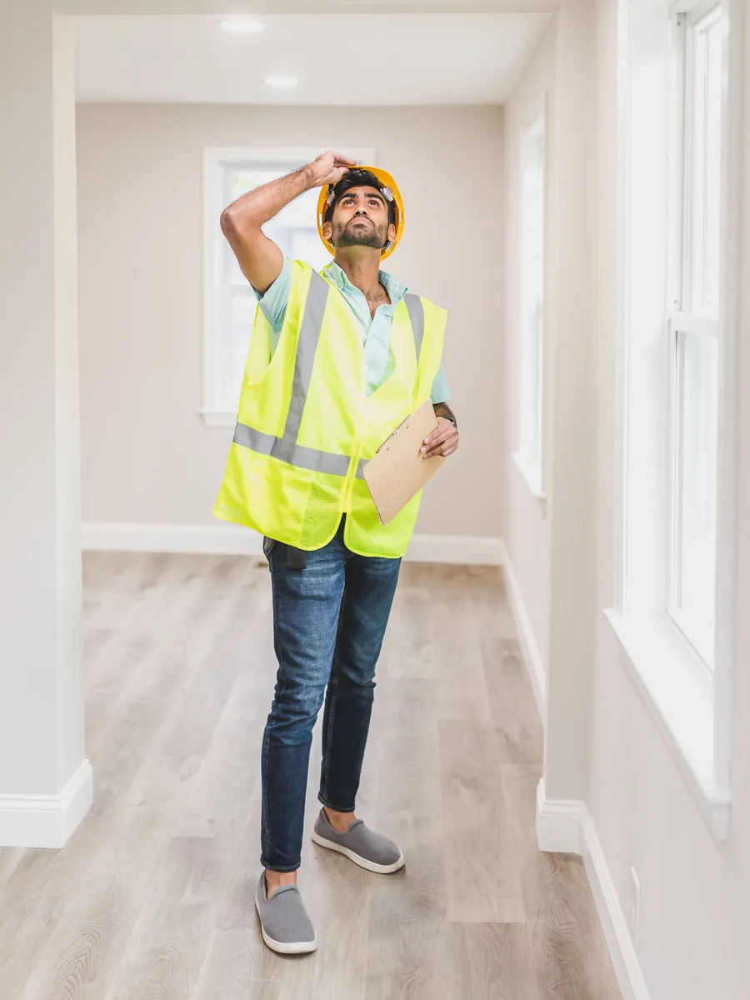
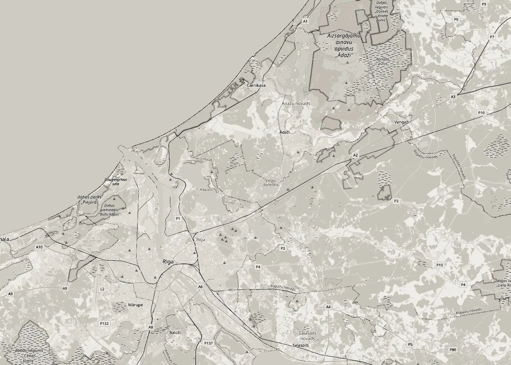

01Būvdarbu vadīšana
Organizējam ēkas būvdarbus: darbu secību, brigādes, materiālu piegādes un termiņus. Kārtojam būvdarbu žurnālu un segto darbu aktus.

Būvdarbu vadīšana · Būvuzraudzība
Vadām ēku būvdarbus un veicam būvuzraudzību pasūtītāja pusē: sekojam, lai darbi atbilstu projektam, normatīviem un līgumam, no pamatiem līdz nodošanai ekspluatācijā.
Pakalpojumi
Būvkomersantu reģistrā mūsu darbības joma ir ēku būvdarbu vadīšana un būvuzraudzība.

01Organizējam ēkas būvdarbus: darbu secību, brigādes, materiālu piegādes un termiņus. Kārtojam būvdarbu žurnālu un segto darbu aktus.

02Pārstāvam pasūtītāju būvlaukumā: pārbaudām, vai darbi atbilst projektam un normatīviem, pieņemam segtos darbus un fiksējam defektus.

03Palīdzam sagatavot izpilddokumentāciju un ēkas nodošanu ekspluatācijā, lai pēc būvdarbiem viss būtu kārtībā arī papīros.

Ko pārbaudām
Būvuzraudzībā svarīgākie ir darbi, kurus vēlāk vairs neredz. Tos pārbaudām, pirms tie tiek aizsegti.
Pirms betonēšanas: armatūra, aizsargslānis un iestrādājamās detaļas atbilstoši projektam.
Mūrējuma vertikāle un šuves, pārsedzes, pārsegumu balsti un enkurojumi.
Spāru solis un stiprinājumi, tvaika un hidroizolācija pirms jumta seguma.
Ūdensapgāde, kanalizācija, apkure un elektrība, pirms sienas un grīdas tiek aizdarītas.
Defektu saraksts un izpilddokumentācija pirms ēkas nodošanas ekspluatācijā.
Kā strādājam
Uzrakstiet, kur atrodas objekts, kas tiek būvēts un kurā posmā ir darbi. Ja ir projekts, pievienojiet to.
Izskatām projektu un apskatām objektu, lai saprastu darba apjomu.
Vienojamies par pakalpojumu, objekta apmeklējumu biežumu, termiņiem un cenu. Visu nostiprinām līgumā.
Vadām būvdarbus vai uzraugām tos līdz ēkas nodošanai ekspluatācijā.

Darba zona
Strādājam Ādažos un Pierīgas novados. Ja objekts atrodas citur Latvijā, uzrakstiet, un vienosimies.
Uzrakstīt
Kontakti
Uzrakstiet, kas tiek būvēts, kur un kurā posmā ir darbi. Atbildēsim ar priekšlikumu.
E-pastsnorix5@inbox.lvAtrašanās vietaĀdaži, Ādažu novads